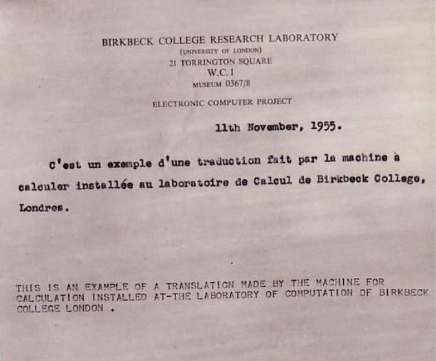

"Possibly the most exciting area of computer research at the present time is that of artificial intelligence. [These ideas that we] first put forward in 1952, seem to be those most in favour at the present time."
Born as Kathleen Britten in Stourbridge, England in 1922 She got a B.Sc. in Mathematics from the University of London and a Ph.D. in Applied Mathematics in 1950. There weren't any computer degrees to be had as of yet.
Kathleen Booth created the assembly language and the design of the assembler for the first ARC computers at Birkbeck college in London. She worked there from 1946- 1962.Kathleen gained her bachelor's
degree in Maths from the University of London and in 1950 she earned her PhD in Applied Mathematics. From 1942-62 Kathleen worked at Birkbeck College as part of one of the smallest British computer
groups of the time. The team created the ARC (Automatic Relay Computer), the SEC (Simple Electronic Computer), and the APE(X)C (All-purpose Electronic (Rayon) Computer), remarkable achievements given
the size of the team and the resources it had access to. From 1944 to 1946 she was a Junior Scientific Office at the Royal Aircraft Establishment and then from 1946 to 1952, a Research Scientist at the British
Rubber Producers Research Association (BRPRA). Also in 1946, she started work as a research assistant at Birkbeck College, University of London, later becoming a Research Fellow and Lecturer.
At Birkbeck, computer research was being done by Andrew Booth whom Kathleen would eventually marry. Andrew had previously done X-ray crystallography research at the University of Birmingham and that included doing a lot of computations. This started him down the path of building computing machines to make the work easier. He next spent a short time as a research physicist at the BRPRA where he began work on the ARC, the Automatic Relay Computer (sometimes referred to as the Automatic Relay Calculator). This used paper tape for input and was really a special purpose computer serving as a Fourier synthesizer. In 1946 he took up a post as a Nuffield fellow at Birkbeck. He continued work on the ARC but as there was no room at the College, and since the BRPRA was funding it, the work was done at their facilities. It was then that he met Kathleen. Kathleen and another research assistant, Xenia Sweeting, helped Andrew continue building the ARC and in fact did most of the construction. In 1947, through funding from the Rockefeller Foundation and the BRPRA, Andrew and Katheleen took a 6 month US tour with von Neumann whom Andrew had met during a previous visit. The tour was based in Princeton, New Jersey at the Institute for Advanced Study. This visit was also the first time that the Booth’s had heard of the von Neumann architecture. It led Andrew to redesign the ARC, designing the relay part of the machine in only 2 months, coming up with what is sometimes referred to as the ARC2. Still in 1947, Kathleen and he also wrote up two reports about it, General considerations in the design of an all-purpose electronic digital computer and Coding for A.R.C.. The first of those reports was widely circulated and even underwent a 2nd edition. In it, they detailed what’s needed for a von Neumann architecture machine, outlining a number of different options for the memory. In 1947, in order to get funding from Rockefeller, the Booth’s added working on natural language processing to their list of projects. The goal was to achieve accurate technical translation and not literary quality. In their book, Automatic Digital Calculators, they outline some of the algorithms which they and colleagues had worked on up to 1965, starting out with word substitutions and processing of stems and word endings. While they did a lot of work on NLP at Birkbeck College with their students, there’s also a record of them working on English-French translations for the National Research Council Canada between 1965 and 1972 as shown below.
The Booth’s left Birkbeck College in 1962, both moving to Canada to work at the University of Saskatchewan and then at Lakehead University in 1972. She retired from Lakehead in 1978 but an article search shows a paper by her and her son, Dr. Ian J. M. Booth, entitled Using neural nets to identify marine mammals dated 1993 when she would have been 71 and still going strong.